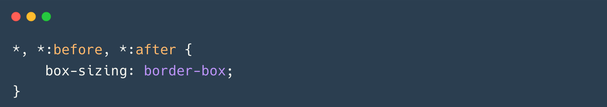

box-sizing: border-box
üßô‚Äç‚ôÇÔ∏è Voc√™ não passará ... at√© conferir este documento útil sobre box-sizing no Web Reference.
Uma regra CSS para governar todas, uma regra para alinhá-las, uma regra para trazê-las todas e no markup uni-las.
*, *:before, *:after {
box-sizing: border-box;
}
CSS box-sizing
Com box-sizing: border-box, o padding e a borda de um elemento
são incluídos na largura e altura do elemento, o que significa que o tamanho que você define é o tamanho que
você obtém. Isso torna os layouts muito mais previsíveis e fáceis de controlar.
É isso, essa é a dica do dia, e é uma que vai render dividendos em tempo economizado.
box-sizing: border-box?box-sizing controla como a largura e a altura de um
elemento são calculadas.content-box (padrão): A largura e a altura incluem apenas o conteúdo. Padding e borda
são adicionados ao tamanho total.border-box: A largura e a altura incluem o conteúdo, o padding e a borda. O tamanho
definido é o tamanho total do elemento.box-sizing: border-box?
box-sizing: border-box?
:before e
:after):
*, *:before, *:after {
box-sizing: border-box;
}
Sem box-sizing: border-box:
.box {
width: 200px;
padding: 20px;
border: 5px solid black;
}
200px (conteúdo) + 40px (padding) + 10px (borda) = 250px.Com box-sizing: border-box:
.box {
width: 200px;
padding: 20px;
border: 5px solid black;
box-sizing: border-box;
}
200px (já inclui padding e borda).Aqui está um resumo organizado para você consultar:
box-sizing: border-box
O que é?
Valores
content-box: Padding e borda são adicionados ao tamanho do conteúdo (comportamento padrão).
border-box: Padding e borda são incluídos no tamanho definido.Por que usar?
Como aplicar?
*, *:before, *:after {
box-sizing: border-box;
}
Exemplo prático
Sem box-sizing: border-box:
.box {
width: 200px;
padding: 20px;
border: 5px solid black;
}
Com box-sizing: border-box:
.box {
width: 200px;
padding: 20px;
border: 5px solid black;
box-sizing: border-box;
}
box-sizing: border-box no início do seu
CSS.